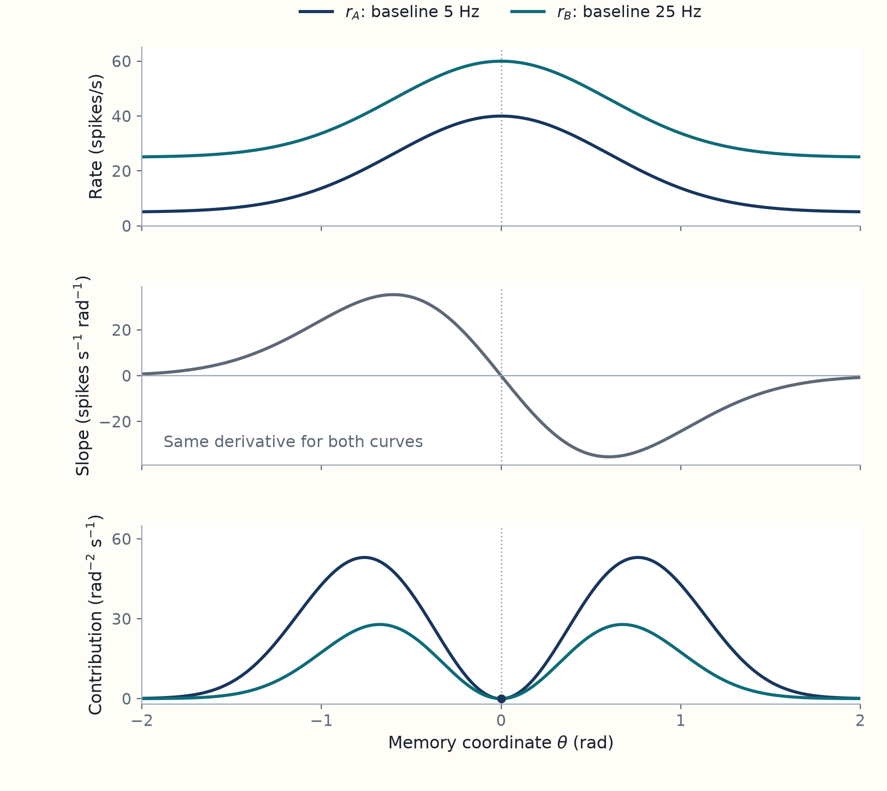
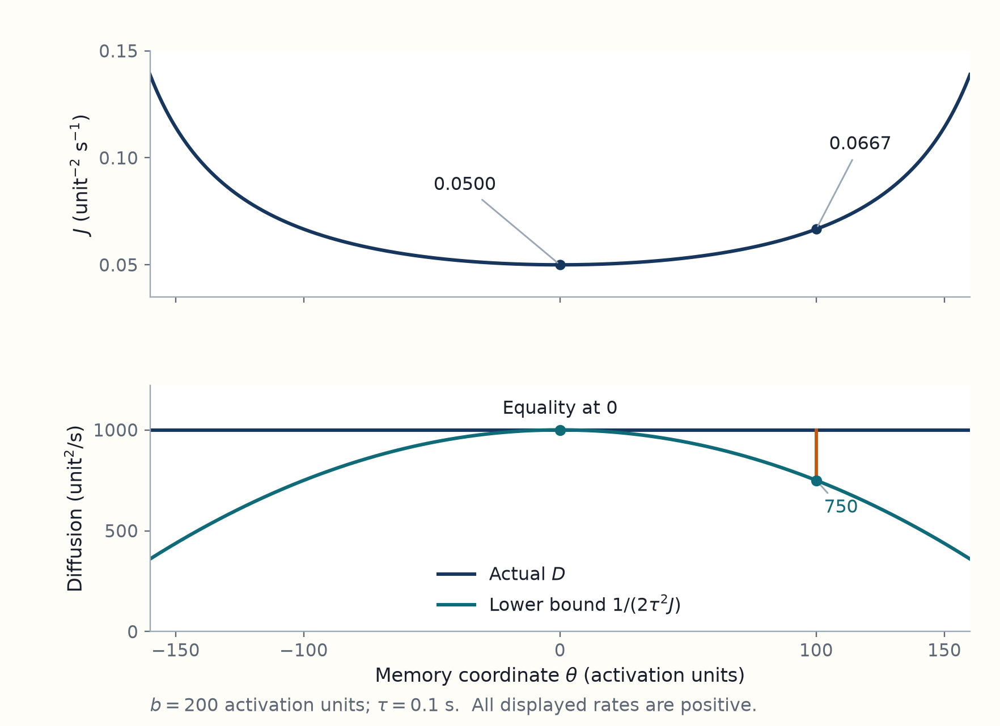

5 Spike information limits memory stability
A neuron receiving spikes from a memory circuit has access to information about the stored value. This chapter sets a bound on estimation error under the model’s assumptions and derives the constraint that spike information places on the circuit’s memory stability.
[Paper 2012] Burak and Fiete ask how well the network’s own spikes distinguish nearby values of the memory it currently holds. They calculate this internal Fisher information rate \(J\) and show that it limits how slowly the memory can diffuse: \(D\ge1/(2\tau^2J)\). Here \(D\) is the local diffusion coefficient of the represented value and \(\tau\) is the synaptic time constant. The result assumes a stable continuous family of states, weak fluctuations, Poisson spike generation that is independent across neurons conditional on the current rates, and a common synaptic time constant. It holds for arbitrary connection weights and transfer functions under those assumptions. These are the second and third steps of the argument, after Chapter 3’s diffusion calculation. See main Eqs. 3–4, PDF pp. 2–3.1
[Derivation: the bound] For neuron \(i\), let \(\bar r_i(\theta)>0\) be its noise-free steady rate and \(r_i'=d\bar r_i/d\theta\) its change per unit memory coordinate. Let \(v_i\) be the lasting change in the represented value caused by a unit perturbation of that neuron’s outgoing activation, after the other disturbances relax. Chapter 3 gives \(2D=\sum_i v_i^2\bar r_i\) and the normalization \(\tau\sum_i v_i r_i'=1\). The paper’s information rate is \(J=\sum_i(r_i')^2/\bar r_i\). Applying Cauchy–Schwarz to \(v_i\sqrt{\bar r_i}\) and \(r_i'/\sqrt{\bar r_i}\) gives
\[ \frac{1}{\tau^2}=\left(\sum_i v_i r_i'\right)^2 \le\left(\sum_i v_i^2\bar r_i\right) \left(\sum_i\frac{(r_i')^2}{\bar r_i}\right)=2DJ. \]
For positive \(J\), dividing by \(2J\) gives \(D\ge1/(2\tau^2J)\). The next section derives why this expression for \(J\) measures information in the spikes; the inequality section develops the bound and its interpretation in more detail.
[Interpretation: information and memory] Imagine a receiving neuron trying to estimate the angle from those spikes. A larger sample can help it distinguish nearby activity patterns, but the represented angle may move while it collects them. The paper relates the information in the spikes to motion within the memory network; the later readout calculation asks what an observer can recover after a delay.
The bound describes each network under the paper’s stated assumptions. When comparing two networks, we must also say what changes and what stays fixed. More information permits a lower minimum diffusion rate; it does not guarantee that a particular network achieves that minimum.
[Background] We retain the memory coordinate \(\theta\), initial value \(\Theta\), firing rate \(\bar r_i(\theta)\), synaptic time constant \(\tau\), and diffusion convention \(\operatorname{Var}(\Delta\theta)=2D\Delta t\). The network projection determines which activity changes remain as changes in the stored value.
5.1 Internal Fisher Information: rate slopes and spike variability
[Paper 2012] In “Internal Fisher Information,” main Eq. 3, PDF pp. 2–3, the information per unit time in the network’s spikes about its current attractor coordinate \(\theta\) is
\[ J(\theta)=\sum_i\frac{1}{\bar r_i(\theta)}\left(\frac{d\bar r_i(\theta)}{d\theta}\right)^2. \]
Here \(i\) indexes neurons, \(\bar r_i(\theta)\) is neuron \(i\)’s steady firing rate at \(\theta\), and \(d\bar r_i/d\theta\) is how fast that rate changes as the represented value changes. This expression assumes positive rates and conditionally independent Poisson spike counts during an observation short enough that the state is effectively fixed. If that observation lasts \(h\) seconds, its information is approximately \(I_h(\theta)=hJ(\theta)\). Supporting text section IV, Eqs. S42–S44, PDF pp. 9–10, develops this expression. The steps below derive it here.
[Background] Let \(h\) be the observation duration in seconds and \(n_i\) neuron \(i\)’s spike count. For this calculation, hold \(\theta\) effectively fixed during observation and assume positive rates. Once that state is fixed, the model treats the counts from different cells as independent Poisson variables. Their mean and variance are both \(\bar r_i(\theta)h\). This is a short observation approximation to the recurrent circuit, whose state can otherwise move while spikes are collected.
[Derivation] For neuron \(i\), write \(r_i'=d\bar r_i/d\theta\) for the change in its steady firing rate per unit change in the represented value \(\theta\). During an observation lasting \(h\), the expected spike count is \(h\bar r_i\). The count sensitivity is the change in that expected count per unit change in \(\theta\): its value is \(h r_i'\). For a small change \(\delta\theta\), the expected count therefore changes by approximately \(h r_i'\,\delta\theta\). The Poisson count variance, our measure of count noise here, is \(h\bar r_i\). Write \(I_{h,i}(\theta)\) for the information in neuron \(i\)’s spike count during the window \(h\). Dividing the squared count sensitivity \((h r_i')^2\) by that variance gives
\[ I_{h,i}(\theta)=\frac{(h r_i')^2}{\bar r_i h} =h\frac{(r_i')^2}{\bar r_i}. \]
[Paper 2012] For this Poisson model, the squared count sensitivity \((h r_i')^2\) divided by the count variance \(h\bar r_i\) is exactly the single-cell Fisher information \(I_{h,i}\) over duration \(h\). Here \(r_i'=d\bar r_i/d\theta\) is the rate slope, and \(\bar r_i\) is that cell’s steady firing rate at the represented value \(\theta\). For counts independent across neurons, the single-cell contributions add to give \(I_h\), the information in the population’s counts; dividing by \(h\) gives the information rate \(J\). This is the authors’ Eq. 3, PDF p. 2:
\[ I_h(\theta)=h\sum_i\frac{(r_i')^2}{\bar r_i}=hJ(\theta), \qquad \boxed{J(\theta)=\sum_i\frac{(r_i')^2}{\bar r_i}.} \]
[Background] To compare possible angles, hold the observed spike counts fixed and vary the proposed \(\theta\). A likelihood compares proposed parameter values by the probability each assigns to those observations. It is not, by itself, a probability distribution over the proposed angles.
[Derivation: likelihood and Fisher information] Suppose four spikes were recorded during the short observation. A candidate angle predicting four spikes on average and one predicting sixteen assign different probabilities to that same count. Evaluating those probabilities as the proposed angle changes gives the likelihood. The following calculation makes the link to the paper’s information rate explicit.
For the full vector \(\mathbf n\) of observed counts, independence gives
\[ p(\mathbf n\mid\theta)=\prod_i \frac{[\bar r_i(\theta)h]^{n_i}e^{-\bar r_i(\theta)h}}{n_i!}. \]
Taking the logarithm turns the product into a sum. With \(r_i'=d\bar r_i/d\theta\),
\[ \ell(\theta)=\log p(\mathbf n\mid\theta) =\sum_i\{n_i\log[\bar r_i(\theta)h]-\bar r_i(\theta)h-\log(n_i!)\}, \]
\[ S(\theta)=\frac{d\ell}{d\theta} =\sum_i\frac{r_i'}{\bar r_i}(n_i-\bar r_i h). \]
The score \(S\) is the slope of the log likelihood with respect to the proposed value. A positive score means that a small increase in the proposed angle makes the observed count pattern more likely. A negative score favors a small decrease. At the true value, these signed slopes average to zero over repeated spike samples because \(E[n_i]=\bar r_i h\). Squaring before averaging prevents the positive and negative slopes from canceling:
\[ E[S^2] =\sum_i\frac{(r_i')^2}{\bar r_i^2}\operatorname{Var}(n_i) =h\sum_i\frac{(r_i')^2}{\bar r_i}. \]
Products of centered counts from different cells average to zero by conditional independence. The remaining terms use \(\operatorname{Var}(n_i)=\bar r_i h\). The general definition used here is \(I_h(\theta)=E_\theta[S(\theta)^2]\): the mean squared score over data generated at \(\theta\). The supplement instead writes the equivalent expected curvature of the log likelihood. When the positive rates are twice differentiable and differentiation can pass through the sum over counts,
\[ I_h(\theta)=E_\theta[S(\theta)^2] =-E_\theta\!\left[\frac{d^2\ell}{d\theta^2}\right] =h\sum_i\frac{(r_i')^2}{\bar r_i}. \]
The equality follows by differentiating the identity \(\sum_{\mathbf n}p(\mathbf n\mid\theta)=1\) twice. With \(\ell=\log p\),
\[ \partial_\theta^2p=p\left[(\partial_\theta\ell)^2+\partial_\theta^2\ell\right]. \]
The probability-weighted average of the sum in brackets is therefore zero. This is the connection to SI Eqs. S42–S44, PDF pp. 9–10. It gives \(I_h=hJ\) in the Poisson model. Other spike distributions can give a different expression.
[Interpretation: Fisher information] A receiving neuron gets spikes, not a label saying which angle the memory circuit represents. Fisher information is large when a small change in the stored value changes the expected counts strongly compared with their random spread. It measures how readily the probabilities of possible observations distinguish nearby values. The ratio of squared count sensitivity to count variance is exact here because the counts have the assumed Poisson distribution; it is not the general definition for arbitrary spike statistics.
The comparison is local: a cell can distinguish small changes near one angle yet respond identically at two distant angles. A large \(J\) alone cannot resolve that distant ambiguity. \(J\) is the information rate about the circuit’s current represented value, before choosing a decoder. “Internal” means the value is maintained by the circuit rather than supplied by a present stimulus. With angles in radians, \(I_h\) has units \(\mathrm{rad}^{-2}\) and \(J\) has units \(\mathrm{rad}^{-2}\mathrm{s}^{-1}\); neither is a number of stored bits.2
Example: extra background spikes can make an angle harder to read.
[Example] Consider an illustrative neuron with rate 40 spikes per second at the angle of interest. Near that angle, each degree of change increases its rate by 20 spikes per second. In a 0.1-second observation, its mean count is 4 and its standard deviation is \(\sqrt{4}=2\) spikes. The mean count changes by 2 spikes per degree. Thus the change per degree is as large as one standard deviation of the count noise.
Now add 120 spikes per second of background firing that does not depend on angle. The mean count becomes 16 and its standard deviation becomes 4 spikes. The change per degree remains 2 spikes. The same angle change is now half as large relative to the noise. Squaring that comparison gives one quarter of the original information. More spikes have made this particular comparison worse because they added variability without increasing the response to angle.
These numbers describe a chosen local tuning curve and a Poisson count model, not measured neurons. Multiplying the entire tuning curve would be a different change: it would increase the slope as well as the mean rate.
[Interpretation: implications] The expression explains three ways a code can change:
- Doubling a cell’s tuning slope while keeping its rate fixed gives four times the local information.
- Adding constant background firing while keeping the slope fixed lowers its contribution, as in the example.
- Adding another independently fluctuating, tuned cell adds information. Shared fluctuations require a different calculation.
A rate peak has zero slope, so that cell contributes no information about infinitesimal angle changes at that point under this positive-rate Poisson formula. Other cells with nonzero slopes can still inform the population’s estimate. The following curves show where each cell’s contribution comes from.

Both curves change by the same amount with angle. The higher curve has more Poisson count noise, which explains its lower information away from the peak. The likelihood calculation above shows why the squared count sensitivity divided by count variance is Fisher information for this Poisson model.
[Interpretation] Information limits how accurately the value can be read. An estimator is a rule that turns observed data into an estimated value, here \(\hat\theta(\mathbf n)\). It is unbiased if repeating the observation at a fixed true value gives estimates whose average equals that value. Individual estimates can still be wrong. Their variance measures their trial-to-trial spread around that average.
[Background] The Cramér Rao bound puts a lower limit on that variance for estimators unbiased across the nearby values, under the smoothness conditions used in the proof:
\[ \boxed{\operatorname{Var}(\hat\theta)\ge\frac{1}{I_h(\theta)}=\frac{1}{hJ(\theta)}.} \]
[Interpretation] Four times the information halves this lower bound on the standard deviation. It does not promise that a particular decoder reaches the bound. The paper uses an approximation in which the spike sample is informative enough for a suitable estimator to approach it.3
Derivation: why inverse information bounds estimation variance
[Derivation] Assume the same estimator is unbiased throughout a neighborhood of \(\theta\), the probabilities vary smoothly with \(\theta\), and differentiation can be exchanged with summation over the counts. Differentiate \(E_\theta[\hat\theta]=\theta\):
\[ 1=\sum_{\mathbf n}\hat\theta(\mathbf n)\partial_\theta p(\mathbf n\mid\theta) =E[\hat\theta S] =E[(\hat\theta-\theta)S]. \]
The last equality uses \(E[S]=0\). The Cauchy Schwarz inequality says that the squared average product of two variables is no greater than the product of their mean squares. Applying it to estimation error \(\hat\theta-\theta\) and score \(S\) gives
\[ 1\le E[(\hat\theta-\theta)^2]E[S^2], \qquad \boxed{\operatorname{Var}(\hat\theta)\ge\frac{1}{Jh}.} \]
Unbiasedness makes the mean squared error equal to the variance. Dividing by \(E[S^2]=I_h=hJ\) gives the bound when that information is positive and finite.
[Background] A prior distribution describes which parameter values were more plausible before observing these spikes. A decoder that uses this additional knowledge, or accepts a systematic error, has a different error problem. The bound above also needs care near boundaries or zero firing rates. For sensory estimation the same Poisson formula applies when the rates depend on a present stimulus, whereas here they depend on a maintained internal value.
[Interpretation] Finally, \(I_h=hJ\) assumes that the represented value stays effectively fixed during observation. Longer collection in a freely evolving memory circuit also allows that value to wander. The next section links \(J\) to this physical wandering, and the readout chapter treats what changes when the observer tries to recover the initial value. See main Eq. 3, p. 2 and SI Section IV, pp. 9–10.
5.2 Information-Diffusion Inequality: a lower bound on memory diffusion
[Paper 2012] In “Information-Diffusion Inequality,” main Eq. 4, PDF p. 3, the authors bound the diffusion coefficient \(D\) using the information rate \(J\):
\[ D(\theta)\geq\frac{1}{2\tau^2J(\theta)},\qquad\text{equivalently}\qquad 2D(\theta)J(\theta)\tau^2\geq1. \]
\(D\) measures the local rate at which the represented value \(\theta\) spreads across trials: its short-time displacement variance is \(2D\,dt\). \(J\) is the internal Fisher information rate carried by spikes about the current \(\theta\), and \(\tau\) is the common synaptic time constant. This is the paper’s bound for its weak-noise model, not a claim about all memory circuits. The supporting text, section V, PDF pp. 10–12, Eqs. S45–S56, gives the proof. The shorter derivation below spells out the scalar case.
[Paper 2012] The network has no access to its exact firing rates as noiseless numbers. Its recurrent input is built from the same random spikes that an external observer sees. Burak and Fiete suggest thinking of maintenance as estimating the state again from roughly one synaptic time constant \(\tau\) of the network’s own spikes. For a state held fixed, that sample would supply information \(J\tau\), so even an ideal locally unbiased estimate would have variance at least \(1/(J\tau)\). Comparing this with the variance \(2D\tau\) accumulated over the same time suggests \(2D\tau\ge1/(J\tau)\). One factor of \(\tau\) comes from collecting information; the other comes from accumulating displacement variance. This is the authors’ heuristic; the calculation below establishes the inequality from the projection assumptions. Paper, p. 3.
[Derivation] Cauchy Schwarz bounds a dot product by the product of the two vector lengths. Here \(u_i=d\bar s_i/d\theta\) is the change in neuron \(i\)’s steady activation per unit change of the memory value; \(v_i\) gives the lasting change in that value per unit perturbation of \(s_i\). Their normalization \(\sum_i v_i u_i=1\) fixes the dot product, while the two lengths measure diffusion and information. The rate slope is \(r_i'=d\bar r_i/d\theta\), and \(\tau\) is the common synaptic decay time. From the projection and diffusion calculation,
\[ 2D=\sum_i v_i^2\bar r_i, \qquad u_i=\tau r_i', \qquad \sum_i v_i u_i=1. \]
Define two vectors \(x_i=v_i\sqrt{\bar r_i}\) and \(y_i=r_i'/\sqrt{\bar r_i}\). Their dot product is
\[ \sum_i x_i y_i=\sum_i v_i r_i'=\frac{1}{\tau}. \]
Their squared lengths are \(\sum_i x_i^2=2D\) and \(\sum_i y_i^2=J\). Cauchy Schwarz therefore gives
\[ \left(\frac1\tau\right)^2 \le\left(\sum_i x_i^2\right)\left(\sum_i y_i^2\right)=2DJ, \]
or
\[ \boxed{D\ge\frac{1}{2\tau^2J}.} \]
[Interpretation: the bound] This proof uses the general left vector formula, so symmetric weights are unnecessary. It is a shorter teaching reconstruction of the scalar proof in SI Section V. Its assumptions are those used to derive \(D\) and \(J\). It is not a general statement about all possible noisy memory systems.4
The units agree: \(\tau^2J\) has units of time per coordinate squared, so its reciprocal has the units of diffusion. Small internal information forces a large minimum diffusion coefficient. Large information allows small diffusion, but does not guarantee it.
5.3 Generalizations: multiple coordinates, time scales, and noise laws
[Paper 2012] The authors extend the information–diffusion inequality to several coordinates (supporting text section V, PDF pp. 11–12). If the information matrix \(J\) is invertible, the matrix form is
\[ 2D\succeq \tau^{-2}J^{-1}. \]
Here \(D\) is the diffusion matrix: \(2D_{\alpha\beta}dt\) gives the local covariance of coordinate displacements over \(dt\). The matrix \(J\) measures how coordinate changes affect the spike probabilities. The symbol \(\succeq\) means that the difference between the two matrices is positive semidefinite: the bound applies to the variance of every linear combination of coordinates. The calculation below specifies the matrix entries and assumptions.
[Interpretation] A spike can shift more than one coordinate, so the information and diffusion must describe combinations of shifts. For coordinate \(\alpha\), \(\mathbf u^\alpha=\partial\bar{\mathbf s}/\partial\theta_\alpha\) is the change in steady activations per unit coordinate change, and \(\mathbf v^\alpha\) extracts the lasting change in that coordinate from a small activation disturbance. The multi-coordinate projection derives these vectors.
[Derivation] For \(m\) memory coordinates \(\theta_1,\ldots,\theta_m\), let \(\alpha\) and \(\beta\) identify coordinates and \(i\) identify neurons. The steady rate \(\bar r_i\) depends on all the coordinates; \(\partial_{\theta_\alpha}\bar r_i\) is its slope with respect to coordinate \(\alpha\), holding the others fixed. The information is a matrix,
\[ J_{\alpha\beta}=\sum_i \frac{\partial_{\theta_\alpha}\bar r_i\, \partial_{\theta_\beta}\bar r_i}{\bar r_i}. \]
[Interpretation] The matrix calculation assumes that every independent small coordinate change can be distinguished through a change in rates, so \(J\) is invertible. If a nonzero change in coordinates leaves every rate unchanged to first order, that direction has zero local information and \(J\) is singular. For example, if all cells depend locally on \(\theta_1+\theta_2\) only, increasing \(\theta_1\) while decreasing \(\theta_2\) by the same amount is invisible to this local readout. Larger changes or other observations could still distinguish those values.
[Derivation] Here \(D\) is the diffusion matrix: \(2D_{\alpha\beta}dt\) is the local covariance of coordinate displacements over \(dt\). The matrix bound \(2D\succeq\tau^{-2}J^{-1}\) means that every linear combination of coordinate displacements obeys the corresponding variance lower bound. Here \(A\succeq B\) means \(\mathbf z^T(A-B)\mathbf z\ge0\) for every real vector \(\mathbf z\). To derive it, recall \(u_i^\alpha=\tau\,\partial_{\theta_\alpha}\bar r_i\) and form \(N\times m\) matrices \(U_{i\alpha}=u_i^\alpha/\sqrt{\bar r_i}\) and \(V_{i\alpha}=v_i^\alpha\sqrt{\bar r_i}\), where \(N\) is the number of neurons and \(m\) the number of memory coordinates. Let \(I\) be the \(m\times m\) identity matrix. Then
\[ U^TV=I,\qquad U^TU=\tau^2J,\qquad V^TV=2D. \]
To establish the bound, set \(Q=V-U(U^TU)^{-1}\). Expanding \(Q^TQ\) and using \(U^TV=I\) gives
\[ Q^TQ=V^TV-(U^TU)^{-1} =2D-\tau^{-2}J^{-1}\succeq0. \]
For any coordinate direction \(\mathbf z\),
\[ \mathbf z^TQ^TQ\mathbf z=\|Q\mathbf z\|^2\ge0. \]
The squared length cannot be negative. This is what the matrix inequality says: after subtracting the lower-bound matrix, the remaining variance is nonnegative in every coordinate combination.
[Interpretation] The bound controls every combination of stored coordinates, including coupled directions that separate scalar bounds would miss. If \(J\) is singular, this ordinary inverse formula cannot be used.5
[Paper 2012] The main article’s “Generalizations” and “Saturation” discussion, PDF pp. 3–4, gives a further case. In the studied model with a synaptic time constant \(\tau\) and a membrane time constant \(\tau_m\), the scalar lower bound becomes \(D\ge 1/[2(\tau+\tau_m)^2J]\). The larger time constant contributes most when the two are very different. The supplement develops this case in section VII, Eqs. S84–S92, PDF pp. 17–19, after its readout analysis. The calculation below specifies the model and separately identifies apparent printed-equation discrepancies.
[Interpretation] The time constant in the inequality comes from the dynamics that carry an activation fluctuation into a lasting memory change. If both synaptic activation and firing rate adjust gradually, which time constant matters?
[Background] In the basic model, the firing rate changes immediately when the summed input changes. Assume symmetric weights. The extension instead lets neuron \(i\)’s firing rate \(r_i\) approach \(\phi(g_i)\) gradually, with time constant \(\tau_m\), while synaptic activation \(s_i\) still decays with time constant \(\tau\). Here \(g_i\) is its total input and \(\phi\) maps input to a firing rate.
[Background] The filtering introduction explains the continuous-time white-noise convention. The symbol \(\xi_i\) writes the spike fluctuation as a drive in a rate-of-change equation. White noise is an ideal zero-mean input whose fluctuations at different times are uncorrelated. Its continuous-time strength is defined through a delta-function covariance, rather than a finite variance at an individual time. In the Gaussian approximation used here, \(\xi_i\,dt=\sqrt{r_i}\,dB_i\), with independent Brownian increments \(dB_i\). Conditional on the current rates, its contribution over \(dt\) has variance \(r_i\,dt\), the same spike-count variance as in the basic model. The two dynamical equations are
\[ \dot s_i=-s_i/\tau+r_i+\xi_i, \qquad \tau_m\dot r_i=-r_i+\phi(g_i). \]
[Derivation] In this symmetric weight extension, the linear state is \((\delta\mathbf s,\delta\mathbf r)\): changes of synaptic activations and firing rates from their steady values. In the matrix below, \(W\) contains the connection weights, \(I\) is the identity matrix, and \(\operatorname{diag}(\phi')\) has the transfer slopes \(\phi'(\bar g_i)\) on its diagonal. The deterministic matrix is
\[ A=\begin{pmatrix} -I/\tau&I\\ \operatorname{diag}(\phi')W/\tau_m&-I/\tau_m \end{pmatrix}. \]
The right tangent is \((\tau\mathbf r',\mathbf r')\). Write the left zero vector as \((\mathbf a,\mathbf b)\). The second block of \((\mathbf a^T,\mathbf b^T)A=0\) gives \(\mathbf b=\tau_m\mathbf a\). The first then gives \(W^T\operatorname{diag}(\phi')\mathbf a=\mathbf a/\tau\), so symmetry again permits \(\mathbf a\propto\mathbf g'\). Normalizing its dot product with the right tangent yields
\[ a_i=\frac{g_i'}{(\tau+\tau_m)\sum_jg_j'r_j'}. \]
Only the \(s\) block receives the modeled spike noise, so \(2D=\sum_i a_i^2\bar r_i\). The symmetric formula consequently becomes
\[ 2D=\frac{\sum_i\bar r_i(g_i')^2} {(\tau+\tau_m)^2[\sum_i g_i'r_i']^2}, \qquad 2D\ge\frac{J^{-1}}{(\tau+\tau_m)^2}. \]
[Interpretation] The sum of the two time constants replaces \(\tau\). When one time constant is much larger, it supplies most of that sum. This result belongs to the two stage model and noise placement just described. The paper does not prove that arbitrary collections of biological time constants can always be added.6
[Paper 2012] For the alternative in supporting text section VII, PDF p. 19, the authors report that the same information–diffusion inequality holds with additive white Gaussian noise of constant variance. For symmetric weights, a linear transfer function is sufficient to attain equality; for Poisson noise, an exponential transfer function is sufficient. The comparison depends on the noise model and how information is defined for its observations.
[Derivation] To explain the comparison, the discussion replaces Poisson spike-count fluctuations with independent Gaussian noise of constant strength \(q>0\):
\[ ds_i=F_i(\mathbf s)dt+\sqrt q\,dB_i. \]
[Derivation] For an observation interval of length \(h\), the observed mean rate is now Gaussian with variance \(q/h\). Here \(q\) is the constant noise strength specified above. Repeating the score calculation gives \(J=\sum_i(r_i')^2/q\), while projection gives \(2D=q\sum_i v_i^2\). The same Cauchy Schwarz proof yields \(2DJ\ge\tau^{-2}\). Equality requires \(v_i\propto r_i'\) because all cells have the same noise strength. In a symmetric network \(v_i\propto g_i'\), so a linear transfer rule supplies the condition by keeping \(\phi'(g)\) constant across participating inputs.
[Interpretation] In the Poisson case, variance grows with rate and an exponential rule is a sufficient way to attain equality. The pointwise projection condition remains the general criterion. A linear-family example below shows that an exponential transfer rule is not necessary for every family. The difference between these sufficient classes follows from the noise weighting, not from linearity being universally preferable.7
[Derivation] This explicit \(q\) formulation is a teaching reconstruction that keeps dimensions and the noise normalization visible. The supplement’s Gaussian subsection establishes the change in equality condition. Here the matched noise and likelihood derivation supplies all factors of \(q\) and \(\tau\) without requiring the reader to infer a normalization from SI Eqs. S94–S95.
5.4 Saturation of the information-diffusion inequality: when is the bound attained?
[Interpretation] Reaching the bound requires the network’s retained response to each cell’s spike noise to match that cell’s information about memory. Specifically, the cell’s lasting effect \(v_i\) must be proportional to its rate slope divided by its rate, \(r_i'/\bar r_i\). A cell that adds retained noise without helping distinguish nearby values prevents equality. In a symmetric network, the transfer function determines whether those effects have the required proportions.
[Derivation] Equality requires the two vectors in the proof to be proportional:
\[ v_i=c\frac{r_i'}{\bar r_i} \quad\text{for every contributing cell}, \qquad c=\frac{1}{\tau J}. \]
Cells with zero tuning slope cannot contribute extra projected noise if equality is to hold. In a symmetric network, \(v_i\) is proportional to \(g_i'\), and \(r_i'=\phi'(\bar g_i)g_i'\). At each state, the participating cells therefore need a common value of \(\phi'(\bar g_i)/\phi(\bar g_i)\). A sufficient way to satisfy this at all states is to choose that ratio equal to the same constant \(k\) throughout the relevant input range. Solving
\[ \frac{d}{dg}\log\phi(g)=k \]
gives \(\phi(g)=A e^{kg}\).
[Paper 2012] The authors show that \(\phi(g)=A e^{kg}\), with positive constants \(A\) and \(k\), attains \(D=1/(2\tau^2J)\) for symmetric weights and Poisson noise under the other model assumptions. They also state the converse: that saturation requires an exponential transfer function. The example below tests that converse separately; the claimed inequality itself is not in question.8
[Interpretation] The check below finds that further restrictions are needed for that converse: the common ratio may depend on the current memory state. This check is separate from the authors’ published correction to Eq. 2.
Check: equality can also hold with a linear transfer rule
[Derivation] The mutual-excitation example shows why equality does not require an exponential transfer rule under the stated general assumptions. This check is the calculation, not an author-issued correction. Set its bias \(b_0=0\) and use the linear rule \(\phi(g)=g/\tau\) on positive inputs. Its fixed states are \(s_1=s_2=\theta>0\), with \(\mathbf u=(1,1)^T\) and \(\mathbf v=(1/2,1/2)^T\). Both rates are \(\theta/\tau\), and both rate derivatives are \(1/\tau\). Therefore
\[ 2D=\frac{\theta}{2\tau},\qquad J=\frac{2}{\tau\theta},\qquad 2DJ=\frac{1}{\tau^2}. \]
Equality holds throughout this family even though its transfer rule is linear. At each state both cells receive the same input, and the ratio \(\phi'/\phi=1/\theta\) changes between states. To conclude that equality forces an exponential rule, we need additional restrictions linking the participating input values across cells and states. Continuous variation of the represented value alone does not supply them. This qualification concerns the source’s claim that equality requires an exponential rule. The information–diffusion inequality remains unchanged.
Example: the same diffusion with a looser information bound.
[Example] Return to the two cell mutual inhibition model, now using \(b=200\) activation units and \(\tau=0.1\,\mathrm{s}\). This changes the illustrative bias from the Chapter 3 plot, while retaining the same network equations. The model units can also represent groups of neurons, whose rates are sums over their cells. The memory coordinate is an activation difference, not an angle. Here \(\bar r_1=(b+\theta)/(2\tau)\) and \(\bar r_2=(b-\theta)/(2\tau)\). At \(\theta=0\) both rates are \(1000\,\mathrm{s}^{-1}\). Their slopes are \(\pm1/(2\tau)=\pm5\,\mathrm{s}^{-1}\) per activation unit. Thus
\[ J=\frac{25}{1000}+\frac{25}{1000}=0.05, \qquad D=\frac{b}{2\tau}=1000. \]
Here \(J\) has units of inverse activation unit squared per second, and \(D\) has activation unit squared per second. The bound is \(1/(2\tau^2J)=1000\), so equality holds at this balanced state. At \(\theta=100\), the rates become \(1500\) and \(500\,\mathrm{s}^{-1}\), while their slopes stay \(\pm5\). Now
\[ J=\frac{25}{1500}+\frac{25}{500}=\frac1{15}\simeq0.06667, \qquad \frac1{2\tau^2J}=750. \]
The actual diffusion remains \(1000\). The inequality is strict because the projection coefficients \(v_i\) no longer satisfy the equality condition \(v_i\propto r_i'/\bar r_i\) for the two unequal rates. These coefficients describe how spike fluctuations shift the stored value; they are distinct from the synaptic connection weights \(W_{ij}\). This also shows why equality at a special state does not force the transfer function to be exponential on its whole domain. A constant lower bound attained everywhere and an accidental equality at one state are different claims.

The gap at \(\theta=100\) shows why a lower minimum allowed by the inequality is not a reduction in the network’s actual diffusion. See Diffusion bound, Eq. 4, p. 3.
5.5 Improving persistence depends on what a comparison holds fixed
[Paper 2012] The authors report that increasing the population size \(N\), the tuning-curve firing rates, or the synaptic time constant \(\tau\) reduces diffusion in the comparisons made after Eq. 2, PDF p. 2. For the population-size comparison they scale connection weights as \(1/N\), holding each cell’s total input and tuning curve fixed; in the symmetric formula this gives \(D\propto 1/N\). The paper also relates tuning width to information in its discussion, PDF p. 4. The calculations below spell out the controlled comparisons and alternatives.
[Interpretation] The inequality compares diffusion and information for the same network. To compare different networks, we must say what stays fixed. Otherwise an apparent benefit of a parameter change may come from changing another property at the same time. Each comparison below states which tuning curves and inputs stay fixed as neuron number, firing rate, or synaptic decay time changes.
[Derivation] Increasing \(N\) while retaining the same distribution of tuning curves and scaling weights as \(1/N\) keeps individual inputs and rates fixed. The sums in the symmetric formula scale as \(N\) in the numerator and \(N^2\) in the denominator. Consequently \(D\propto1/N\), while \(J\propto N\). This expands the paper’s network-size comparison; it is not a promise about adding arbitrary neurons.
[Derivation] If all tuning rates are multiplied by a factor \(a\), their slopes are also multiplied by \(a\), so \(J\mapsto aJ\). For equality achieving exponential networks, \(D\mapsto D/a\) immediately follows. The same scaling follows from the symmetric diffusion formula when the change preserves \(g_i'\) up to a common scale and preserves the tuning geometry. For a general fixed nonlinear transfer rule, multiplying rates need not preserve those quantities or even the attractor. The paper’s rate comparison is made with the tuning shapes and appropriate network scaling held under control.9
[Derivation] Changing \(\tau\) while holding the rate tuning curves and their input relation fixed gives \(D\propto\tau^{-2}\) in the symmetric formula. Maintaining those curves requires retuning the network, because \(\bar s=\tau\bar r\).
[Interpretation] At fixed rates, longer-lasting spike effects give larger mean activations. The activation difference between two nearby stored values also grows in proportion to \(\tau\). In this symmetric comparison, one spike’s unit activation change therefore produces a smaller displacement of the stored value: the projection coefficients scale as \(1/\tau\). The spike variance per unit time stays fixed, so the retained variance scales as \(1/\tau^2\).
[Example] In contrast, holding activation curves and dimensionless weights fixed in the linear two cell example makes rates scale as \(1/\tau\), so \(D=b/(2\tau)\propto\tau^{-1}\).
[Interpretation] These two statements concern different controlled model comparisons. A longer synaptic time constant lowers the diffusion coefficient in both; the power of \(\tau\) depends on what the comparison holds fixed.
[Paper 2012] The paper links tuning width to memory persistence: under the sensory-coding comparison it cites, narrower tuning improves persistence for a one-dimensional attractor, whereas broader tuning improves it in three dimensions (main article, PDF p. 4).10
[Derivation] The independent reconstruction below makes one such comparison explicit: for tuning width \(w\) in dimension \(d\), \(J\propto w^{d-2}\), so a network saturating the information bound has \(D\propto w^{2-d}\) when peak rates, population density and tuning shape are fixed. These exponents belong to that reconstruction, not to every possible tuning family.
[Derivation] Assume preferred positions \(\mathbf c\) have uniform density \(\rho\) in a \(d\) dimensional stimulus or memory space. Away from boundaries, let identical tuning curves have fixed peak rate \(a\) and a common shape \(f\):
\[ \bar r_{\mathbf c}(\boldsymbol\theta) =a f[(\boldsymbol\theta-\mathbf c)/w]. \]
The width \(w\) is varied while \(a\), \(\rho\), and the shape \(f\) are fixed.
[Derivation] For one coordinate direction \(\alpha\), replace the population sum by an integral and substitute \(\mathbf z=(\boldsymbol\theta-\mathbf c)/w\):
\[ J_{\alpha\alpha} \simeq\rho\int d^d c\, \frac{a^2w^{-2}(\partial_\alpha f)^2}{af} =\rho a w^{d-2} \int d^d z\,\frac{(\partial_\alpha f)^2}{f}. \]
[Interpretation] Two factors determine how information changes with tuning width:
- The volume element contributes \(w^d\) because broader fields recruit more neurons.
- The squared slope contributes \(w^{-2}\) because broader curves change more slowly.
[Derivation] Each diagonal entry therefore scales as \(J_{\alpha\alpha}\propto w^{d-2}\). Now restrict the tuning shape \(f\) to depend only on distance from its center. Uniformly distributing those centers makes every coordinate direction equivalent: off-diagonal information terms vanish, and all diagonal entries are equal. For an exponential network that attains the matrix bound, \(D_{\alpha\alpha}=1/(2\tau^2J_{\alpha\alpha})\propto w^{2-d}\).
[Interpretation] The resulting comparisons are:
- Narrower curves help in \(d=1\).
- Width has no leading effect in \(d=2\).
- Broader curves help in \(d=3\).
[Interpretation] These conclusions change under another resource constraint. Fixing the total population spike rate instead of peak rate makes \(a\propto w^{-d}\), giving \(J\propto w^{-2}\) in every dimension. Sparse coverage, a large baseline rate, finite boundaries, correlated noise, or a width too small for the population integral can also change the comparison. Attaining equality means the network reaches the diffusion lower bound for its information rate and synaptic time constant. Minimizing diffusion still requires deciding how much information the allowed architecture and firing budget can supply.
[Interpretation] If an external stimulus produces the same tuning curves as the network’s input free memory states, the sensory and internal Fisher information are equal. In a symmetric exponential network, maximizing this information then improves sensory estimation and minimizes memory diffusion together. This is why the paper suggests that one circuit could support both sensory estimation and memory storage. The mathematical compatibility does not establish where a particular animal stores a memory, and the equality of tuning curves must be checked rather than inferred from the shared formula.11
Burak, Y., & Fiete, I. R. (2012). Fundamental limits on persistent activity in networks of noisy neurons. Proceedings of the National Academy of Sciences, 109(43), 17645–17650, main pp. 2–4, Eqs. 3–5. DOI. ↩︎
Burak, Y., & Fiete, I. R. (2012). Fundamental limits on persistent activity in networks of noisy neurons, Supporting Text, pp. 9–10, Section IV, Eqs. S42–S44; main Eq. 3. DOI. The score variance calculation is expanded for teaching. ↩︎
Burak, Y., & Fiete, I. R. (2012). Fundamental limits on persistent activity in networks of noisy neurons. PNAS, 109(43), 17645–17650, p. 3, Information-Diffusion Inequality and Saturation. DOI. The scalar Cramér Rao proof is a teaching reconstruction of the bound invoked there. ↩︎
Burak, Y., & Fiete, I. R. (2012). Fundamental limits on persistent activity in networks of noisy neurons, Supporting Text, pp. 10–11, Eqs. S45–S49; main Eq. 4. DOI. ↩︎
Burak, Y., & Fiete, I. R. (2012). Fundamental limits on persistent activity in networks of noisy neurons, Supporting Text, pp. 10–12, Eqs. S44 and S52–S56. DOI. The residual matrix proof here is an equivalent teaching reconstruction. ↩︎
Burak, Y., & Fiete, I. R. (2012). Fundamental limits on persistent activity in networks of noisy neurons, Supporting Text, pp. 17–18, Eqs. S84–S92. DOI. The linear matrix here follows directly from S84. Its rate decay block is negative, as required by that differential equation, despite the positive sign printed in the corresponding block of S85.↩︎
Burak, Y., & Fiete, I. R. (2012). Fundamental limits on persistent activity in networks of noisy neurons, Supporting Text, p. 19, White Gaussian noise, Eqs. S93–S95; main pp. 3–4. DOI. Constant noise strength \(q\) and its likelihood are retained explicitly in the reconstruction.↩︎
Burak, Y., & Fiete, I. R. (2012). Fundamental limits on persistent activity in networks of noisy neurons, Supporting Text, p. 11, Eqs. S47–S51. DOI. The linear-family counterexample is an independent calculation qualifying the source’s converse. ↩︎
Burak, Y., & Fiete, I. R. (2012). Fundamental limits on persistent activity in networks of noisy neurons. PNAS, 109(43), 17645–17650, p. 2, discussion after Eq. 2; pp. 5–6, Weak Fluctuations. DOI. Comparisons with different held quantities are made explicit here. ↩︎
Burak, Y., & Fiete, I. R. (2012). Fundamental limits on persistent activity in networks of noisy neurons. PNAS, 109(43), 17645–17650, p. 4, tuning width discussion. DOI. The paper cites Zhang and Sejnowski’s tuning work. The integral scaling and alternative firing budget here are teaching derivations, not a separate verification of that cited paper. ↩︎
Burak, Y., & Fiete, I. R. (2012). Fundamental limits on persistent activity in networks of noisy neurons. PNAS, 109(43), 17645–17650, pp. 4–5, sensory representation comparison and footnote concerning similarity of sensory and persistent tuning. DOI. ↩︎